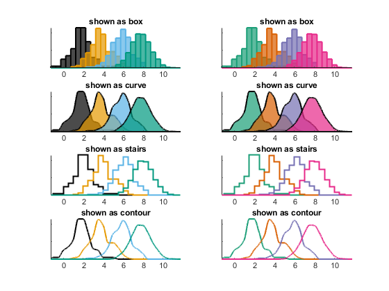

Using custom_hist
Contents
Repo location
This function belongs to the package "plotting tools".
Intro
This code makes different types of histograms. You can provide optional arguments to select a particular plot type. You can also select colors and number of bins
Inputs:
Mandadory: - X, a cell with the data to be displayed Optional, positional - options, a matlab structure where you can specify the number of bins, figure type, etc (see details below) - my_color, a matrix of size number of traces x 3, with the RGB colors for each trace
Generate synthetic data
% Generate data for 4 traces n=4; % Indicate how many points to include on each trace N=[100 150 199 2009]; X=cell(n,1); for i=1:n X{i}=randn(N(i),1)+2*i; end
Define options
clear options options=[]; % options.shown_as='stairs'; ct{1}='box'; ct{2}='curve'; ct{3}='stairs'; ct{4}='contour'; options.n_bins=[]; options.LineWidth=1.5; % options.n_bins=211; % Define colors my_color=[27,158,119 217,95,2 117,112,179 231,41,138]/255; % Make figure as a for loop to show each of the options clf for i=1:4 % Using default colors options.shown_as=ct{i}; subplot(4,2,2*i-1) custom_hist(X,... options) title (['shown as ' ct{i}]) % providing your own color subplot(4,2,2*i) custom_hist(X,... options,... my_color) title (['shown as ' ct{i}]) end